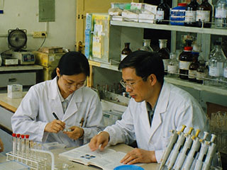
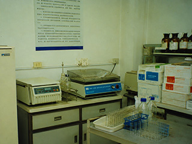
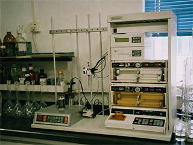

生物化学研究室是在原生物化学分析组基础上建立的研究部门，主要研究地方微生物和其他生物材料中的酶、蛋白质及生物活性物质，开展分离纯化、基本性质、培养过程和分析方法研究，同时承担所内部分生化测试与协作样品分析工作。
研究室现设酶学与蛋白质化学、固定化酶和生化分离三个工作方向。研究材料主要取自本地土壤、水体、传统发酵食品及所内保存菌株，实验工作从菌株复筛、培养条件比较和粗酶制备开始，逐步进行活性测定、分级沉淀、透析、层析和电泳分析。
 |  |  |
一、人员组成
本研究室现有科研和实验技术人员十三名，其中研究员二人、副研究员二人、助理研究员一人。
| 赵瑞安 | 研究员 | 研究室主任、酶学与蛋白质化学 |
| 马文山 | 研究员 | 蛋白质结构与功能 |
| 李平 | 副研究员 | 固定化酶与载体材料 |
| 王海宁 | 副研究员 | 生化分离与发酵过程 |
| 刘 静 | 助理研究员 | 蛋白质分析 |
二、研究工作
近年来重点从地方发酵样品和环境样品中筛选产蛋白酶、纤维素酶和淀粉酶菌株，比较培养基组成、培养温度、起始酸碱度和培养时间对产酶量的影响，并对所得粗酶液进行初步分离，测定适宜反应温度、酸碱度及热稳定性。
固定化酶研究选用海藻酸盐、聚丙烯酰胺及多孔无机材料作载体，比较不同包埋和吸附条件下的酶活回收率、连续反应稳定性及重复使用次数。生化分离工作围绕盐析、透析、凝胶层析和电泳条件进行方法比较，为所内各研究室提供蛋白质、还原糖和酶活性等常规测定。
三、在研项目
JH-0021 地方发酵样品中耐热酶资源筛选（2000—2002）
项目来源：江河省科学院青年项目。围绕地方发酵样品中耐热酶产生菌的筛选、培养条件比较和粗酶液基本性质测定开展工作，相关实验数据和样品编号按项目要求登记保存。
四、研究成果
1．固定化淀粉酶复合载体及反应条件研究（1998）
完成载体选择、固定条件和分批反应试验，比较固定化前后酶活性及温度稳定性的变化，形成小型重复反应试验方法。
2．地方发酵样品中乳酸菌的分离和生化鉴定（1999）
从五义地区传统发酵食品中分离乳酸菌株，整理培养特征、糖发酵反应和耐酸性资料，保留一批性状较稳定的菌株。
3．几种多孔载体固定化纤维素酶性能比较（2000）
比较三类常用载体的吸附量、酶活回收率和重复使用性能，研究结果在省生物化学学会年会上交流。
4．耐热碱性蛋白酶产生菌的筛选及培养条件（2001）
筛选获得两株耐热性较好的产酶菌株，完成培养基组成和培养条件的初步优化，并提交阶段研究报告。
| 版权所有:江河省科学院五义生物研究所 ©2001 Wuyi Institute of Biology, Jianghe Academy of Sciences |
| 网站信箱:webmaster@wyib.ac.cn | 联系电话：(0582)7361026 | 地址:江河省五义市义城区北郊科学路8号 946200 |
| 本网站为虚构故事互动作品，页面所涉机构、人物、报刊与文献均为虚构内容，请勿作为现实资料使用 |